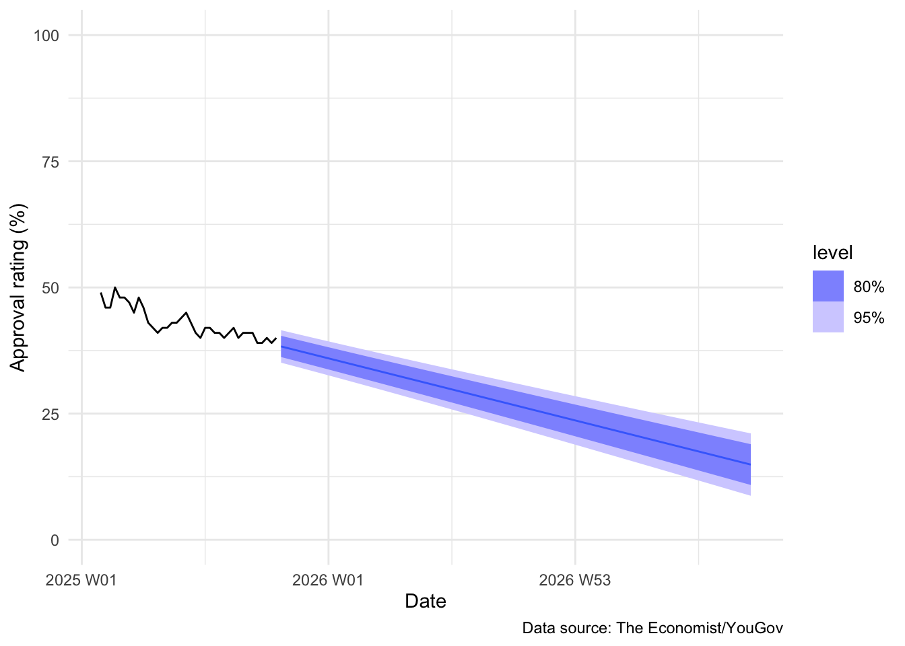

library(tidyverse)
library(tsibble)
library(fable)1 The Whole Game
1.1 A Forecasting Roadmap
Forecasting is the art and science of predicting the future. In political science, we can use it to better understand elections, the impact of policies, international conflict, and public opinion. In this course, you will learn how to move beyond simple guesswork and create structured, data-driven predictions—a skill invaluable in academia, government, and the private sector.
Think about the high-stakes world of modern politics. Every campaign manager, pundit, and policy analyst desperately wants to know what will happen next. Will a new policy boost a leader’s popularity? Will a major news event sink a campaign? We can’t know for certain, but we can manage our uncertainty by building powerful statistical models that learn from history.
This introductory chapter provides a high-level roadmap of the entire forecasting process, from raw data to final prediction. Each step outlined here corresponds to a major topic we will dive into in later chapters. By the end of this course, you will be able to perform this entire process confidently and critique the forecasts you see every day in the news.
1.2 Our Illustrative Example: The Approval Rating Rollercoaster
To illustrate the forecasting process, we will look at one of the most dynamic and closely watched metrics in political science: the current US President’s approval rating across their current term in office.
A President’s approval rating is not just a vanity metric: it is a critical indicator of political capital, legislative success, and re-election prospects. The data we will use are collected on a near-weekly basis by the polling firm YouGov on behalf of The Economist. It provides the percentage of respondents from a representative sample of the US voting population who approve of President Trump’s performance in office.
This dataset is a perfect time series example: the data points are ordered in time, and each observation is influenced by the one that came before it. The challenge is clear: given the up-and-down rollercoaster of events, can we predict where the President’s popularity will be next week, next month, or next year?
1.3 Step 1: Prepare Your Data
Before any analysis can begin, you must first wrestle your data into a usable format. This step, which often involves cleaning messy spreadsheets, merging different data sources, and handling missing values, is often the most time-consuming part of any data science project.
In time series analysis, there is a crucial final step: transforming your regular data frame into a special object that can handle time. We will use the tsibble object in R. The ‘ts’ stands for “time series.” A tsibble is essentially a smart data frame that knows:
What the time variable is (e.g.,
date)How frequently the data occur (e.g., weekly)
In what order the data should be processed
Without this structure, R simply sees a list of numbers. With it, R sees a chronological history that can be modeled. In this course, we will mostly provide you with clean data, but understanding the importance of the tsibble structure is vital.
trump_approval <- read_rds(here::here("data", "trump_approval.rds")) |>
mutate(date = yearweek(date)) |>
as_tsibble()
trump_approval# A tsibble: 38 x 2 [1W]
date approve
<week> <dbl>
1 2025 W05 49
2 2025 W06 46
3 2025 W07 46
4 2025 W08 50
5 2025 W09 48
6 2025 W10 48
7 2025 W11 47
8 2025 W12 45
9 2025 W13 48
10 2025 W14 46
# ℹ 28 more rows1.4 Step 2: Plot your data
The very first analytical step is always visual: plot your data. Your eyes are often the best tool for identifying patterns that statistical formulas might miss. By visualizing the time series, you can better detect three major features:
Trend: Is the approval rating generally going up, staying flat, or going down over the long run?
Seasonality: Are there patterns that repeat over fixed, known intervals (e.g., does approval always dip during the summer recess or spike after a major national holiday)? In weekly polling data, true seasonality might be rare, but understanding the concept is key for other datasets.
Cycles: Are there longer, non-fixed patterns that don’t repeat at a perfect interval, often linked to the political or economic cycle?
Plotting the data allows you to get an intuitive feel for the underlying story your model will try to capture. We call this process Exploratory Data Analysis (EDA), and it is the foundation of selecting an appropriate forecasting model.
Figure 4.1 shows Mr Trump’s approval rating since his first day in office. We can see that his approval rating is decreasing over his term in office.
autoplot(trump_approval) +
theme_minimal() +
labs(x = "Date",
y = "Approval rating (%)",
caption = "Data source: The Economist/YouGov") +
scale_y_continuous(limits = c(0, 100))1.5 Step 3: Specify your model
The model specification step is where you formally decide on the statistical story you want to tell about your data. A statistical model is a simplified mathematical representation of reality. Since reality is messy, the model abstracts away the noise to focus on the signal—the core pattern.
In this course, we will explore many different ‘stories’:
Simple Trend Models (like the one below): The story is that approval ratings change by a fixed, constant amount over time, plus some random, unpredictable noise.
Models based on previous values (Autoregressive models): The story is that the best predictor of today’s approval rating is yesterday’s approval rating.
Advanced Models: Combinations of the above that capture both trend and complex, changing relationships over time.
For this initial demonstration, we will select the most straightforward story: a linear trend model. This model assumes that the change in approval rating over time can be represented by a straight line.
1.6 Step 4: Train your model
Once you specify your model, you must train it. Training is the process of using your historical data (the observed approval ratings) to calculate the precise parameters that make your model’s “story” fit the data and capture that core underlying pattern.
In the case of our linear trend model, training involves finding the best possible straight line—specifically, calculating the best starting point (intercept) and the best rate of change (slope) that minimizes the vertical distance between the line and every observed data point.
The model() function in the fable package handles this training step automatically. It ingests your time series data and outputs a trained object that contains all the necessary parameters for prediction.
fit <- trump_approval |>
model(linear_trend = TSLM(approve ~ trend()))We now have a trained statistical model of the President’s approval rating over time.
1.7 Step 5: Evaluate your model’s performance
How do you know if your model’s story is any good? You certainly can’t trust a model that only works on the data it was trained on! The key step in forecasting is rigorously evaluating the model’s performance on data it has never seen before.
To do this, we often set aside the most recent historical data (the “test set” or “holdout set”). We then ask our trained model to “predict” these past, unseen values. We then compare the model’s predictions to the actual observed values. The difference between the prediction and the actual outcome is called the forecast error.
Evaluating these errors—how big they are, if they are systematic, and if they are acceptable—is the only way to gain confidence in a model. If the errors are too large or follow a clear pattern (e.g., the model always overestimates the rating), the model is not trustworthy, and you must go back to Step 3: Specify Your Model and try a new, better story.
The fable package provides the accuracy() function to quickly summarize these errors. To properly use it, we first need to split our data, train the model on the training set, and then compare its forecasts to the test set.
# 1. Split the data: Use all but the last 10 weeks for training
n_test <- 10
trump_train <- trump_approval |> slice(1:(n() - n_test))
trump_test <- trump_approval |> slice((n() - n_test + 1):n())
# 2. Train the model on the training data only
fit_train <- trump_train |>
model(linear_trend = TSLM(approve ~ trend()))
# 3. Forecast for the test period
forecast_test <- forecast(fit_train, new_data = trump_test)
# 4. Show the accuracy metrics
accuracy(forecast_test, trump_approval) |>
select(.model, RMSE, MAE)# A tibble: 1 × 3
.model RMSE MAE
<chr> <dbl> <dbl>
1 linear_trend 2.11 1.97We will dedicate a whole chapter to interpreting these metrics like RMSE (Root Mean Squared Error) and MAE (Mean Absolute Error), but for now, just know that lower numbers mean a better-performing model.
1.8 Step 6: Forecast
If, and only if, you are happy with your model’s performance on the holdout data, you can use it to predict future, unknown values. This final step is called forecasting.
When you forecast, you are typically interested in two things:
The Point Estimate (
.mean): This is the model’s single best guess—the center of the prediction. For instance, the model’s best guess for the President’s approval rating in the future.The Prediction Interval: This is the crucial measure of uncertainty. It provides a range of plausible values within which the actual outcome is likely to fall (e.g., 95 percent of the time). A good forecaster never provides a single number; they always provide this interval, acknowledging that the future is inherently uncertain.
For example, we will now forecast the President’s approval ratings for the next 100 weeks using our simple linear trend model:
trump_approval_forecast <- forecast(fit, h = "100 weeks")
trump_approval_forecast# A fable: 100 x 4 [1W]
# Key: .model [1]
.model date
<chr> <week>
1 linear_trend 2025 W43
2 linear_trend 2025 W44
3 linear_trend 2025 W45
4 linear_trend 2025 W46
5 linear_trend 2025 W47
6 linear_trend 2025 W48
7 linear_trend 2025 W49
8 linear_trend 2025 W50
9 linear_trend 2025 W51
10 linear_trend 2025 W52
# ℹ 90 more rows
# ℹ 2 more variables: approve <dist>, .mean <dbl>The output above shows your forecast: the .mean is your point estimate, and the columns with 80% and 95% confidence levels define the prediction intervals.
Finally, we plot these predicted approval ratings alongside the observed history to see the whole story:
trump_approval_forecast |>
autoplot(trump_approval) +
theme_minimal() +
labs(x = "Date",
y = "Approval rating (%)",
caption = "Data source: The Economist/YouGov") +
scale_y_continuous(limits = c(0, 100))

Our simple model predicts that the overall trend of declining popularity will continue. Notice how the uncertainty (the shaded dark and light blue areas) gets wider the further out we look. This intuitively makes sense: it’s easier to be sure about next week than next year.
This entire process—from preparing the data to evaluating models and communicating uncertainty—is what this course is about. You will acquire the skills needed to make predictions informed by what has happened in the past and understand the level of risk you are taking. Let’s get started!